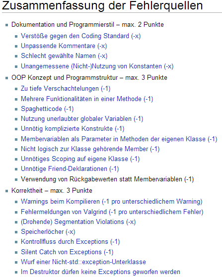

Tutorium #1
Softwareentwicklung Praktikum
Gruppe 4 – Michael Schwarz
prog-tutor-michael@iicm.tugraz.at
Gruppe 5 – Anja Karl
prog-tutor-anja@iicm.tugraz.at
Gruppe 8 – Thomas Neff
prog-tutor-thomas@iicm.tugraz.at
Ablauf des Tutoriums
- Ablauf
- Kommunikation
- Beurteilung
- Arbeitsumgebung
- Makefiles
- SVN
- unsere erste Klasse
Allgemeines zu den Tutorien
- 4 Tutorien
- keine Anwesenheitspflicht
- Erklärung der Übungsaufgaben
- Beantwortung von Fragen
- Hilfestellungen
Mitschreiben ist nicht notwendig, die Folien sind online verfügbar
Kontakt
Newsgroups (nntp://news.tugraz.at)
- tu-graz.lv.sep
- tu-graz.lv.sep.organisatorisches
- tu-graz.lv.sep.uebungsgruppen
Das Lesen der Newsgroups ist verpflichtend!
E-Mail
Wichtige Internetadressen
Palme (Abgabesystem)
http://palme.iicm.tugraz.at
Wiki
http://palme.iicm.tugraz.at/wiki/SEP
Teach Center
http://tugtc.tugraz.at/wbtmaster/courseMain.htm?706007
Tutoriumshomepage
http://progslides.github.io/ss14/
Leistung
- 1 Einzelbeispiel
- 2 Gruppenbeispiele (3er Gruppen)
- Übungsteil (30 Punkte)
- Klausur (10 Punkte)
- Nicht Genügend: < 20 Punkte
- Genügend: ab 20 Punkten
- Befriedigend: ab 27 Punkten
- Gut: ab 32 Punkten
- Sehr Gut: ab 36 Punkten
Benotung
- Formale Fehlerquellen 1
- Codingstandard 2
- Testcases
- Abgabegespräche nach Assignments
- Alle Assignments müssen abgegeben werden!
- Keine Plagiate!
Benotungsschema

Arbeitsumgebung
Editor mit Syntaxhighlighting / IDE
kate, gedit, ...
Notepad++
Smultron
Eclipse CDT
Sublime
Upload (SFTP) auf Pluto
FileZilla
SSH
Terminal
ssh tugraz_username@pluto.tugraz.at
PuTTY
Compilieren: g++
g++ -Wall -std=c++0x -o ass1 ass1.cpp
| g++ | Name des Compilers |
| -Wall | Alle Warnungen anzeigen |
| -std=c++0x | ISO C++ 2011 Standard aktivieren |
| -o ass1 | Executable als »ass1« speichern |
| ass1.cpp | Datei, in welcher der C++ Quelltext steht |
Starten:
./ass1
Alternativ: make
make
- Bei allen Assignments liegt ein
Makefile bei
make erstellt das Programm nach den Regeln im Makefile- Kann verwendet werden ohne es zu verstehen
- Standard in größeren Softwareprojekten
Starten:
./ass1
Was ist SVN?
- Versionskontrolle
- Man kann jederzeit auf eine alte Version vom Code zugreifen
- Mehrere Leute können an einem Projekt arbeiten - Man sieht wer was eingecheckt hat
- Vergleichs-Funktion für verschiedene Versionen
- Kostenlose Repositories für TU Graz Studenten
SVN einrichten (1/6) : TUGraz online

SVN einrichten (2/6) : Checkout - Windows
TortoiseSVN


SVN verwenden (3/6) : Update/Commit - Windows

SVN verwenden (4/6) : History - Windows
Rechtsklick > TortoiseSVN > Show Log

SVN verwenden (5/6) : Vergleichen - Windows
Log > Show changes

SVN verwenden (6/6) : Linux
KDE-SVN (zu finden im Packet-Manager)

Einfache Klasse (ball.h)
#ifndef BALL_H_INCLUDED
#define BALL_H_INCLUDED
class Ball
{
private:
float x_, y_, speed_;
int direction_;
public:
Ball(float x, float y, float speed, int direction);
void move();
float getSpeed();
void setSpeed(float speed);
};
#endif
Konstruktor und move (ball.cpp)
#include <math.h>
#include "ball.h"
Ball::Ball(float x, float y, float speed, int direction)
: x_(x), y_(y), speed_(speed)
{
direction_ = direction * M_PI / 180.0;
}
void Ball::move()
{
x_ = x_ + cos(direction_) * speed_;
y_ = y_ + sin(direction_) * speed_;
if(x_ < 0 || x_ > 800)
direction_ = atan2(sin(direction_), -cos(direction_));
if(y_ < 0 || y_ > 600)
direction_ = atan2(-sin(direction_), cos(direction_));
}
Getter und Setter (ball.cpp)
// getter Methode für Variable speed_
float Ball::getSpeed()
{
return speed_;
}
// setter Methode für Variable speed_
void Ball::setSpeed(float speed)
{
speed_ = speed;
}
- Schutz der Variablen vor direktem Zugriff
- Überprüfung/Veränderung/etc. des Wertes vor der Zuweisung
Das main-Programm
#include "ball.h"
int main()
{
Ball b1(200, 225, 5, 10);
while(1)
{
b1.move();
if(b1.getSpeed() < 20) b1.setSpeed(b1.getSpeed() + 0.01);
drawWindow(); // some magic...
}
}
|
|
Häufige Fehler
- Versteckte Dateien/Ordner (Mac OS X)
- Falscher Dateiname
- Warnings beim Kompilieren
- Codingstandard Verstöße
- Spezifikations-Verstöße
- Nicht geforderte Dateien
Live Demo